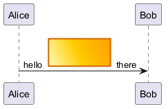

@startuml
!pragma svgparser sax
' Test for diagonal linear gradient (bottom-left to top-right) - policy character: backslash
sprite diagonalgrad2 <svg viewBox="0 0 100 50" xmlns="http://www.w3.org/2000/svg">
<defs>
<linearGradient id="grad" x1="0%" y1="100%" x2="100%" y2="0%">
<stop offset="0%" stop-color="#FFFFCC"/>
<stop offset="50%" stop-color="#FFCC00"/>
<stop offset="100%" stop-color="#FF9900"/>
</linearGradient>
</defs>
<!-- rectangle using diagonal gradient fill (BL to TR) -->
<rect x="5" y="5" width="90" height="40" rx="6" fill="url(#grad)" stroke="#CC6600" stroke-width="2"/>
</svg>
Alice -> Bob : hello <$diagonalgrad2> there
@enduml